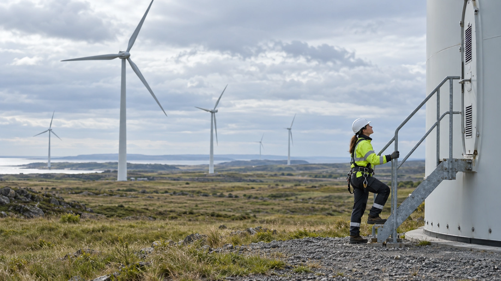

Anthropic Signs Canadian Data-Center Lease With EverWind
The Claude developer is the tenant at Point Tupper. EverWind’s investment plan covers both the proposed campus and new wind generation, not an Anthropic payment.
TTN Research Desk ·

Anthropic, the developer of the Claude AI assistant, has signed a lease with EverWind for data-center capacity at Point Tupper, Nova Scotia. Reuters reported the company executive’s confirmation at 6:53 p.m. Eastern on October 16, describing it as Anthropic’s first Canadian data-center agreement.
EverWind had announced the campus investment earlier Friday with an unnamed frontier AI developer as the initial tenant. The later Reuters report identifies Anthropic. It does not mean the entire project was first announced that evening, or that the data center is already operating.
A campus and its power supply
EverWind is an energy and infrastructure developer. Its official announcement sets out more than C$10 billion in planned private investment at its existing Point Tupper industrial site and in new Nova Scotia wind generation. The breakdown includes more than C$8 billion for the campus and C$2 billion for the wind portfolio.
Those are Canadian-dollar development figures across the project portfolio. They are not a disclosed lease payment by Anthropic, nor a reported amount already spent. EverWind says the initial campus phase has a long-term lease with a frontier AI developer; the later identification supplies the customer’s name.
Why the tenant matters
TTN’s analysis: naming a customer makes a proposed infrastructure project more concrete than an announcement of available land alone. It indicates an intended user for capacity. But a signed lease and delivered computing power remain different milestones. Construction, electricity arrangements and commissioning must still be evaluated separately from the customer agreement.
The wind component also deserves its own scrutiny. Investment in generation does not, by itself, establish that a campus will have uninterrupted power at every hour. The relevant questions include delivery schedules and how electricity reaches the site, not just the size of a spending commitment.
What to watch next
For users of AI services, a Canadian capacity agreement is not automatically a promise that every Canadian customer’s information will stay in Canada. Any such claim needs explicit service terms and technical commitments. Neither the tenant’s identity nor the investment headline establishes that outcome.
The next useful evidence will be project milestones and specific operating commitments, rather than another repetition of the investment total. The financing distinction is similar to the one explored in TTN’s coverage of AI infrastructure borrowing: planned capacity and the money needed to deliver it are related, but not interchangeable.